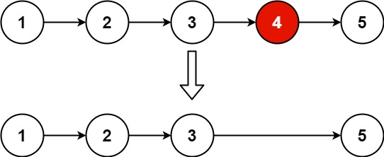

题面
给你一个链表，删除链表的倒数第 n 个结点，并且返回链表的头结点。
示例 1：

输入： head = [1,2,3,4,5], n = 2
输出：[1,2,3,5]示例 2：
输入： head = [1], n = 1
输出：[]示例 3：
输入： head = [1,2], n = 1
输出：[1]提示：
- 链表中结点的数目为
sz 1 <= sz <= 300 <= Node.val <= 1001 <= n <= sz
进阶： 你能尝试使用一趟扫描实现吗？
解法一 两次遍历
思路
- 第一遍：遍历链表得到长度
length - 倒数第
n个 = 正数第length - n个（从 0 开始），需要走到它的前一个，即从哨兵节点走length - n步 - 改
cur.next = cur.next.next删除目标节点
代码实现
class Solution:
def removeNthFromEnd(self, head: Optional[ListNode], n: int) -> Optional[ListNode]:
length = 0
cur = head
while cur:
length += 1
cur = cur.next
dum = ListNode(0, head)
cur = dum
for _ in range(length - n):
cur = cur.next
cur.next = cur.next.next
return dum.next- 复杂度：时间 O(n)（两次遍历），空间 O(1)
解法二 快慢双指针 一次遍历
思路
- 让
r先走n步，然后l和r同步走，直到r.next为 None - 此时
l正好在目标节点的前一个，改l.next = l.next.next即可 - 为什么有效：
r比l超前n步，r到尾时l距尾正好n步，即倒数第n个的前一个 - 易错点：
- 为什么是 `while r.next` 而不是 `while r`：在草稿纸上画一下就清楚了——我们要让
l停在目标节点的前一个。如果用while r，r会走到 None，此时l停在目标节点本身，无法删除。用while r.next，r停在最后一个节点，l正好停在目标的前一个 - 必须用哨兵节点：如果要删的是头节点（
n == length），l需要指向哨兵才能改掉dum.next，否则无法处理 - `l = r = dum` 三个变量指向同一个链表：任意一个修改
.next，整个链表都变了
代码实现
class Solution:
def removeNthFromEnd(self, head: Optional[ListNode], n: int) -> Optional[ListNode]:
l = r = dum = ListNode(0, head)
for _ in range(n):
r = r.next
while r.next:
r = r.next
l = l.next
l.next = l.next.next
return dum.next- 复杂度：时间 O(n)（一次遍历），空间 O(1)